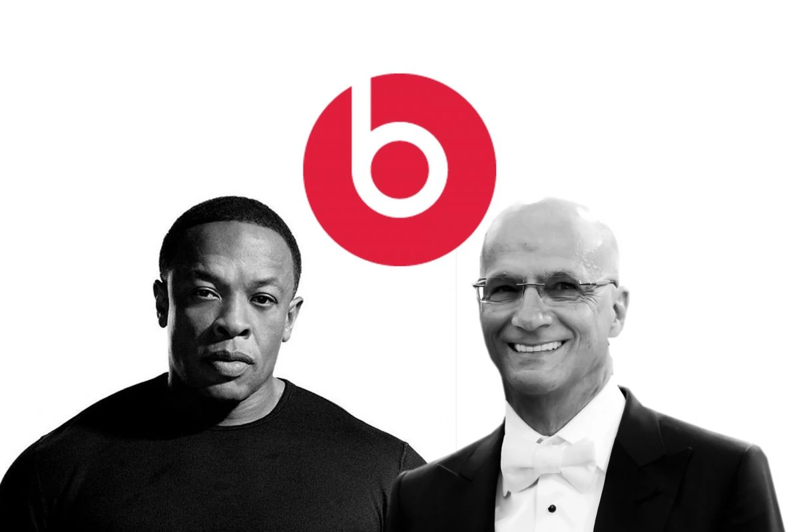

| PhonyBeats by Dr. Dre is a leading audio brand founded in 2006 by Dr. Dre and Jimmy
Iovine. Through its family of premium consumer headphones, earphones and speakers, Beats has
introduced an entirely new generation to the possibilities of premium sound entertainment. The
brand’s continued success helps bring the energy, emotion and excitement of playback in the
recording studio back to the listening experience for music lovers worldwide. |
 |
Beats products are designed with cutting-edge technology, delivering a unique and
immersive audio experience. Whether you're an audiophile or a casual music listener, PhonyBeats
offers a range of products with superior sound quality and stylish designs. Explore our
collection and elevate your music experience with PhonyBeats.
|